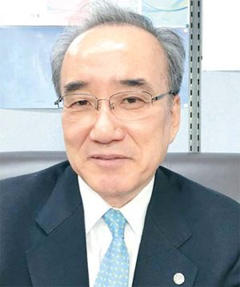

매체 매일경제보도일 2018-04-25
"저출산문제 `제2의 박태준` 없으면 해결못해"
전세계적으로 유례없는 막대한 예산 쏟아부었지만 출산율 높이는데 계속 실패
순환근무하는 부처 담당자들 필요한 곳에 `주사` 놓지 못해
국가의 일을 내 일이라 여길 朴 명예회장 같은 인물 나와야
한국인 첫 亞인구학회장 맡은 김두섭 한양대 특임교수

"유사 이래 저출산 문제를 해결한 나라는 없습니다. 그 어려운 일에 한국이 도전하고 있는데 현재와 같은 방식으로는 성공하기 어렵습니다."
또 1년이 흘렀다. 몇 년 전 전문가들은 베이비붐 세대가 은퇴하는 2020년까지를 저출산을 해결하는 골든타임으로 봤다.
그러나 작년 출생아 수는 역대 최저로 추락했다. 김두섭 한양대 사회학과 특임교수가 올 초 정년퇴임한 후 더 바빠진 것도 이 같은 이유에서다. 한국은 물론 동아시아인 최초로 아시아인구학회장을 맡고 있는 그는 매달 두세 번씩 외국으로 출장을 간다. 회원 국가 70곳, 해당 인구가 지구촌 인구 60%를 넘으니 그에게 딸린 식솔이 만만찮다. 그래도 그는 한국의 `인구 절벽`이 가장 걱정이다. 태국 정부에 신인구정책 자문을 마치고 막 돌아온 김 교수를 서울 행당동에 있는 그의 연구실에서 만났다. 김 교수는 "출산율 부양정책을 맡은 부처 담당자 중에 전문가가 별로 없다"며 "고시를 통과한 똑똑한 인재는 많지만 오랜 시간 지식과 경험을 쌓아 인구 문제를 다뤄온 사람은 안 보인다"고 말했다. 그는 이어 "학계나 외부 전문가들에게 출산정책을 자문하려 하지 않는 것도 큰 문제"라고 지적했다.
그는 큰 틀에서 거버넌스, 즉 정부 조직 운영 방식에 문제를 제기했다. 인구정책 담당자 순환 보직이 한 가지 예다. 몇 년 머물다 다른 부처로 떠나는 사람들이 국가 명운이 걸린 인구정책에 전문성을 발휘하기 어렵다는 것. 그는 "주사를 계속 놓긴 하는데 연신 엉뚱한 곳에다 놓으니 약효가 나기 어렵다"며 "특정 정권, 인물의 문제가 아니라 인구 전략이 2000년대 초보다도 후퇴했다"고 말했다.
이웃 일본엔 평생 인구 문제만 연구해온 정책 담당자가 많다. 대만은 정치적 영향을 배제하며 정책 효율성을 높이고자 노력하고 있고, 싱가포르는 총리가 직접 나서 인구 문제를 다루고 있다. 그렇게 해도 좀처럼 풀기 힘든 게 저출산 문제라고 한다. 김 교수는 "출산율을 높이는 데 우리나라만큼 막대한 정부 예산을 투입하는 나라는 없다"며 "예산 확충이 유일한 해법처럼 인식돼 자꾸 덩치 불리기에만 매달리는 게 안타깝다"고 말했다. 이어 "돈을 퍼붓는다고 출산율이 높아지는 건 아니다. 어디에 어떻게 쓰는지가 관건"이라고 말했다.
역시 인구 감소로 고민했던 유럽 국가들에 새겨볼 만한 교훈이 있다. 일부 유럽 국가는 금전적 보상과 가족 복지 예산 확대를 통한 출산율 증가를 노렸다. 처음엔 효과가 있는 듯했으나 막대한 예산 투입에 비해 효과가 미미하다고 판단돼 결국 정책 방향을 전환하고 있는 추세다. 김 교수는 한국이 이들 국가가 이미 포기한 길을 밟는 걸 경계했다. 그는 "출산장려금, 보육시설 확대가 말 자체로는 틀린 게 아니나 경제 형편이나 삶의 방식 등을 따지지 않고 필요도 없는 사람에게까지 예산을 퍼붓는 건 안 된다"며 "정책 효율성을 감안해 보다 정교한 `선택과 집중`이 필요하다"고 말했다.
특히 선거를 즈음해선 포퓰리즘이 극에 달한다. 이런 바람에 이해관계가 맞물린 집단이 편승하면 메울 수 없는 `구멍`이 생기게 마련이다. 그는 "예전부터 유인책 없는 구호만 넘쳤지만 예산이 효과적으로 쓰였는지에 대해선 아무런 평가가 없었다"며 "더 이상 눈먼 돈이 떠돌아다니게 해서는 안 된다"고 말했다.
`출산 난세`에 영웅이 등장할까. 김 교수는 "우리에겐 `제2의 박태준` 같은 리더십과 그것을 확실히 지지해줄 정부 의지가 필요하다"며 "정부는 여러 부처를 관장하는 인구정책 컨트롤타워를 만들어 강력한 힘을 실어주고, 그곳 책임자는 이해집단들 압력에서 벗어나 출산율 증가에 매진해야 한다"고 말했다. 고(故) 박태준 전 포스코 명예회장이 1970년대 제철보국(製鐵報國) 정신으로 철강 산업을 키워낸 것처럼 지금은 출산보국(出産報國) 정신으로 나라를 위해 소임을 다할 리더가 필요하다는 것이다.
"과거 한국은 인구 증가 문제를 성공적으로 해결해 여러 나라에 귀감이 됐습니다. 그간 경제 발전도 성공적 인구정책의 주춧돌 위에서 가능했습니다. 이제 노동력과 인구 감소 문제까지 해결한다면 세계 인구사에 큰 족적을 남기게 될 겁니다."
[심상대 기자]